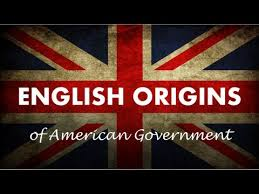

Home
About
Background
US Constitution
British Governing Documents
Governing Systems
Conclusion
Citations
In conclusion the British influenced American government into what it is today through years of oppression and tyrannical governing, British governing documents like the Magna Carta and the English of Rights, and a flawed governing system that included separation of powers and checks and balances. Many British influences limited the powers of the government in an effort to root out tyrannies. The British would not accomplish this for a while after the Revolutionary War, but America acheived this in one day. On the day the Constitution was signed,September 17, 1787, marked the day that democracy got a foothold in the world and when tyrannies lost their power in the world. Without the British there would be no America today, there would be no shining Democracy or a land where all are free. After all before there was the United States of America there was British rule in the colonies so naturally the British had a lot of influence on the colonist and how they viewed the world and government itself.
